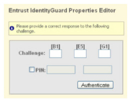

|
IdentityGuard Server 12.0 Administration Guide |
|
IdentityGuard Server 12.0 Administration Guide |
To use the Properties Editor, administrators must log in using a password set in the Administration interface. Depending on policy settings, administrators may also have to authenticate with a grid, token, or temporary PIN.
A Properties Editor session times out after 30 minutes of inactivity. That behavior is controlled by the Web application; it is always 30 minutes. The Properties Editor is not governed by the timeout policies set in the Administration interface.
If the Properties Editor login times out, you must log back in. If you try to save your changes after your session times out, the save request is processed after you log back in.
Note when using Properties Editor with Internet Explorer: Running a Web browser on a computer that provides services shared across your enterprise is considered a dangerous practice from a security perspective. To help mitigate this security risk, Microsoft Windows Server operating systems include an Enhanced Security Configuration feature for Internet Explorer browsers. When enabled, however, that feature can prevent Web applications from working properly. By default, the feature is enabled and it prevents the Properties Editor from working as intended with Internet Explorer. Entrust recommends that you
- run Properties Editor on another supported Web browser, or,
- if you use in Internet Explorer, run Properties Editor on an administrative workstation and disable Microsoft's Enhanced Security Configuration feature.
To log in to the Properties Editor
1. Do one of the following:
● In Windows, click Start > All Programs > Entrust > IdentityGuard > Properties Editor.
● In UNIX or Windows, enter the URL of the Properties Editor in a Web browser:
https://<hostname>:<port>/IdentityGuardPropertiesEditor
Where:
– <hostname> is the host name you selected during configuration.
– <port> is the administration port you selected during configuration.
The Properties Editor opens in the Web browser.
2. On the Log In page, enter your administrator name in Userid.
3. Enter your password in Password. If you do not recall your password, contact the administrator in charge Entrust IdentityGuard to reset it.
4. (Optional) Enter a group name in the Group field. The group is required if the administrator name is not unique within your system; that is, the same userid is associated with more than one group.
5. Click Log In.
If required by policy, a second-factor challenge dialog box appears.

6. Respond to the authentication challenge with one of the methods indicated (grid, token, or temporary PIN).
To use a temporary PIN, first select the PIN option.
7. Click Authenticate to complete the login.
The Entrust IdentityGuard Properties Editor Table of Contents appears.
To log out of the Properties Editor
1. Click the Table of Contents button in any pane.
2. On the Table of Contents page, click Log Out.